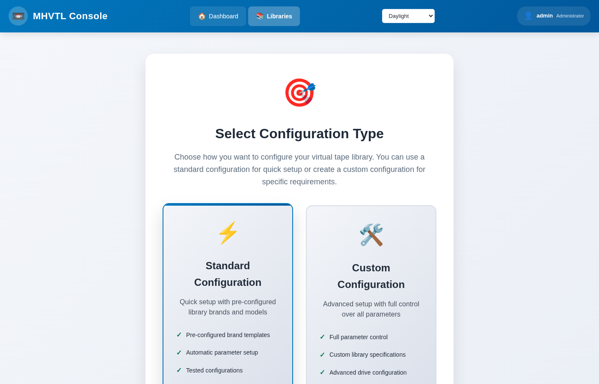
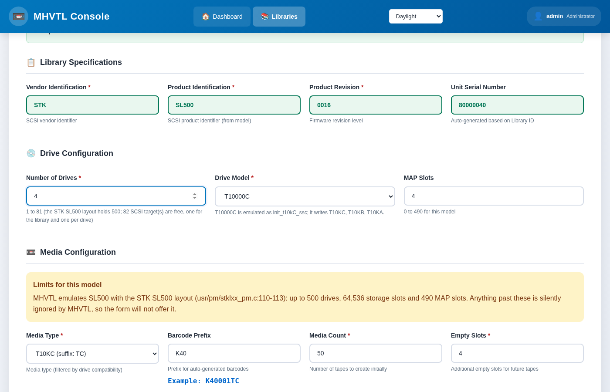

Creating a library
A library is a model - an IBM TS3500, an STK SL500 - with a number of drives, a number of slots, and cartridges of a generation those drives can load. The console only offers combinations MHVTL can really emulate, so a library it lets you build is one that will work.
In the console
Libraries → Create Library, at /libraries/setup/. Two ways in:
{kind=link}

- From a vendor (recommended)
Pick a vendor, then a model. The drive list then shows only the drives that model takes, with its default chosen; the media list only the cartridges that drive writes. The limits on drives, slots and MAP slots are the model’s own.
- From the tape
If you know which cartridge you need, say so first: Show vendors whose libraries can take leaves only the vendors that can, and carries the choice into the form. Choosing
LTO10gets you a model with anULT3580-TDAdrive,LTO10media and barcodes endingLA.
Then set how many drives, how many slots, and how many empty slots to leave for tapes added later. Four empty slots is the default; a library with none cannot take a new tape without being reconfigured.
{kind=link}

Press Create. The console writes device.conf and
library_contents.<id>, starts the daemons, and creates the tape files.
From the terminal
$ sudo mhvtl library create --profile STK --id 50 --drives 2 \
--media-type LTO8 --drive-model ULT3580-TD8 --tapes 3 --empty-slots 3
ok validate Specification is valid
ok create Library 50 created: STK SL500 with 2 drives
ok restart Restarted vtllibrary@50.service
ok verify MHVTL can see library 50
ok media 3 tape(s) created, 0 already present in library 50
Library 50 created
Each step is reported, and a failure says which step failed and leaves the configuration as it was.
Option |
What it does |
|---|---|
|
The vendor: IBM, STK, SONY, QUANTUM, ADIC, DELL, HP, OVERLAND, SPECTRA |
|
The library id; the next free one if you leave it out |
|
The library model, if not the profile’s default |
|
How many drives |
|
The drive model, if not the model’s default |
|
LTO8, LTO9, AIT4 … must be one the drives take |
|
How many cartridges to create and put in slots |
|
Slots to leave free; the profile’s default if omitted |
|
Create the library but no tape files |
|
Write the configuration, start nothing |
|
Print the |
Which combinations exist
Ask, rather than guess:
$ sudo mhvtl tape media 50 # what this library's drives take
Drives: ULT3580-TD8, ULT3580-TD8
DENSITY SUFFIX USE IN DRIVES
------- ------ ---------- -----------
LTO8 L8 read/write ULT3580-TD8
LTO7 L7 read/write ULT3580-TD8
Default for new tapes: LTO8
If a combination is refused, the message says why: Media type ‘LTO8’ is not
supported by drive model ‘T10000C’ means that model’s default drive does not
take LTO; choose a drive that does with --drive-model.
What it wrote
$ sudo mhvtl library show 50
id 50
vendor STK
product SL500
serial XYZZY_50
channel 0
target 18
lun 0
home directory /opt/mhvtl
drives 2
drive ids 51, 52
slots 6
tapes 3
/etc/mhvtl/device.confgained the library and its drives./etc/mhvtl/library_contents.50describes its slots./opt/mhvtl/<barcode>/holds each tape’s files.vtllibrary@50andvtltape@51,vtltape@52are running.
Afterwards
The library page - where the library is worked on
Creating tapes - more cartridges
Exporting a library over iSCSI - let another machine use it